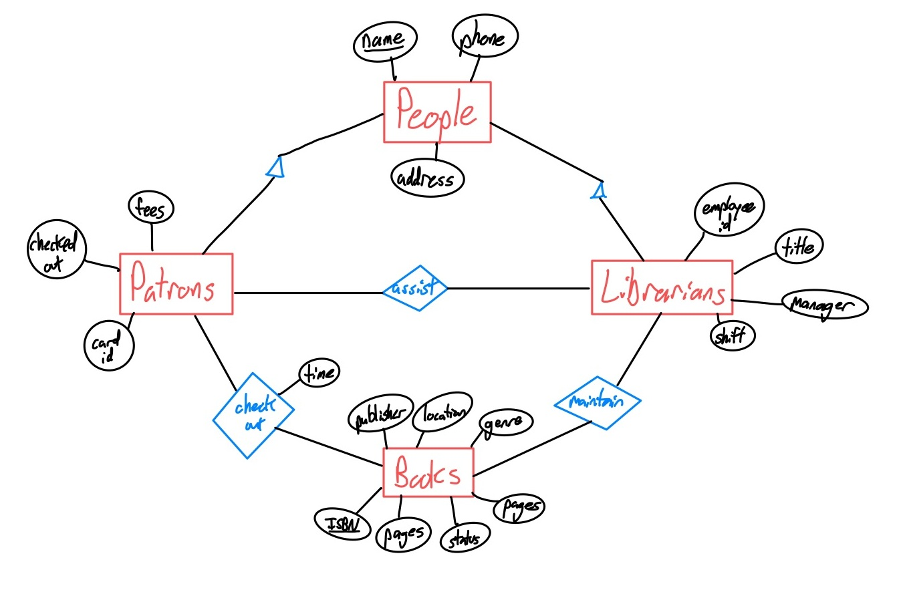

Library Management System
Our project is a library management system to be used by both patrons and
librarians.
Team Members
- Sam Neus
- Corey Wurl
- Charles Korndorffer
- Jose Rodriguez
This project is useful, because library databases generally track quantities of books but don't always do a great job at recommending. Our system would not only track library stock/items but is meant to be used as a tool for both librarians and students to improve their local libraries.
We plan to get data from the library databases, using Hesburgh Library's database as a model but developing our tool for general use. We will also use data from ISBNdb to verify our data.
Basic Functions:
- Librarians should be able to insert/update/delete books from the database
- Both patrons and librarians should be capable of searching the database.
Advanced Functions:
- 1. New book recommendations: While typically recommendations are for patrons, we will develop ours to be used by the librarians. It will calculate the most checked out books or genres and suggest similar books from ISBNdb that may be good for the library.
- 2. Finding books: If a patron can't find a book, the system will locate and tell them its location. If the library does not contain the book, it will search other libraries and suggest local libraries they may check instead.
- Citations: Patrons may wish to cite certain passages from books. It is useful to return the desired citations in the system as they help patrons research.
Link to Development Plan
